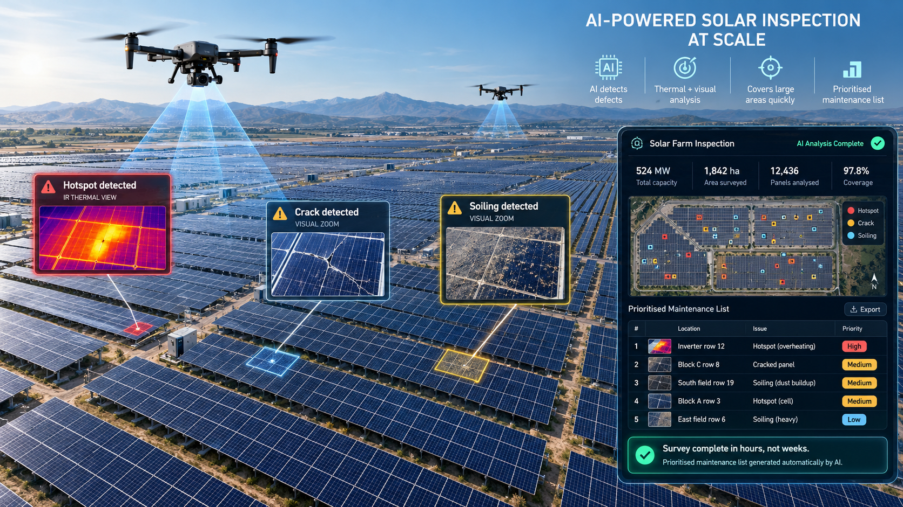
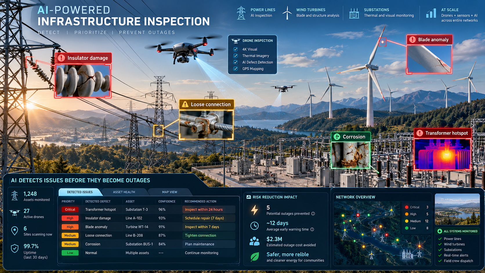
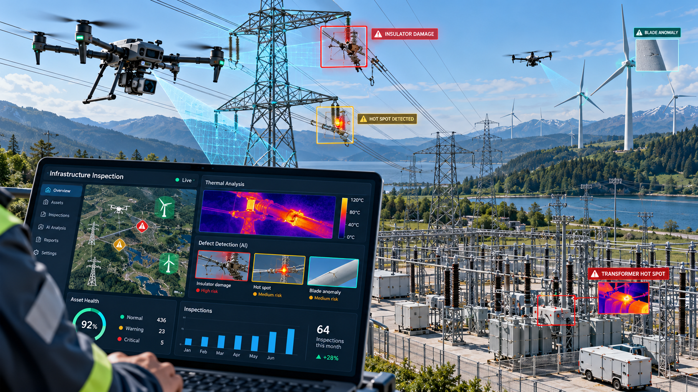
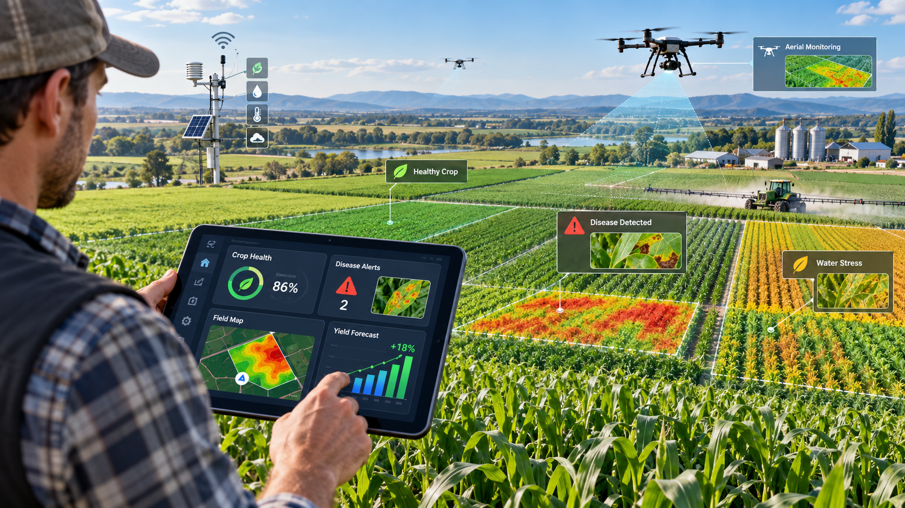
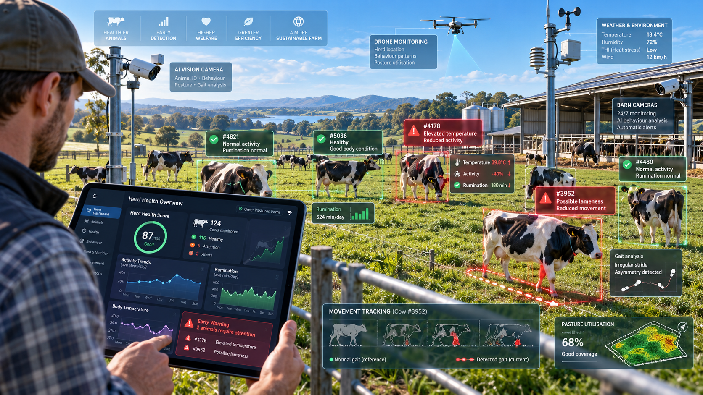
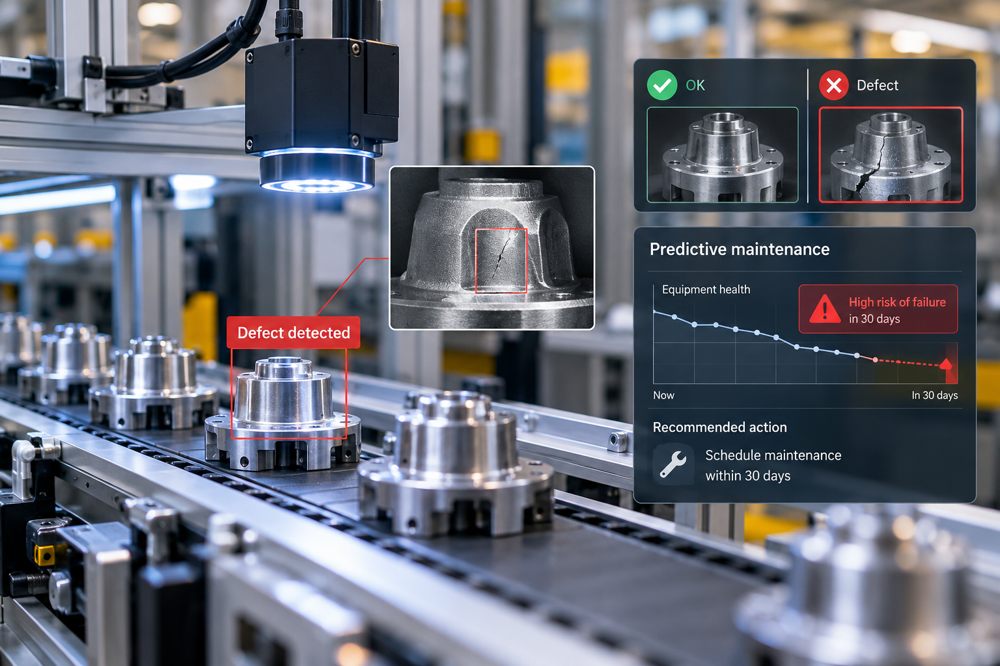
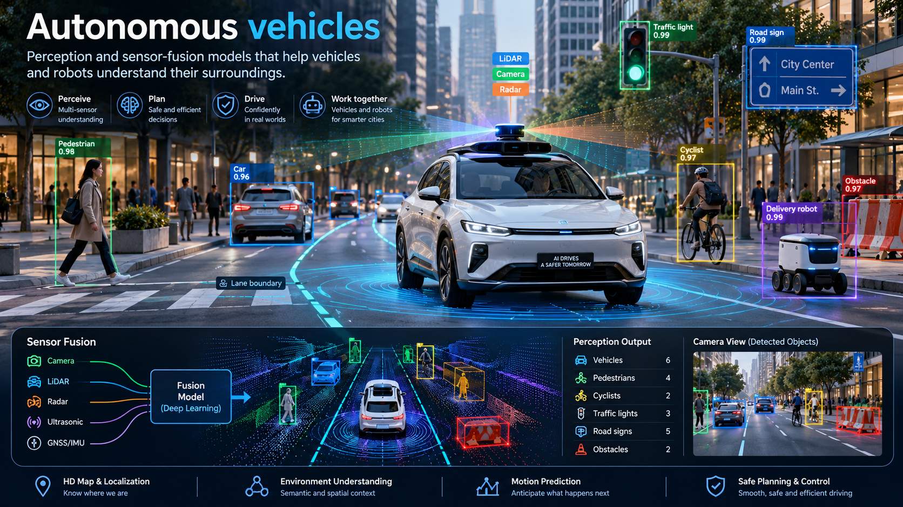

SolarSolar farm inspection at scale
Thermal and visual AI that finds hotspots, cracks and soiling across entire solar farms, turning drone surveys into a prioritised maintenance list in hours instead of weeks.
ATARI
Computer vision, edge AI and predictive analytics for energy, solar, agriculture, livestock, manufacturing and mobility.
Turning camera and sensor data into decisions
Edge AI that runs on devices, even offline
Predicting faults, yields and risks early
Technology that reduces waste and energy use
Featured projects

SolarThermal and visual AI that finds hotspots, cracks and soiling across entire solar farms, turning drone surveys into a prioritised maintenance list in hours instead of weeks.

Automated detection of faults on power lines, towers, turbines and substations from drone and sensor data, helping crews find problems before they become outages.
Trusted by partners across industry and research


Industries
From the field to the factory to the open road, we turn data from cameras and sensors into decisions.

Automated detection of faults on power lines, towers, turbines and substations from drone and sensor data.
Thermal and visual AI that finds hotspots, cracks and soiling across entire solar farms.

Crop monitoring, disease detection and yield forecasting to help farms grow more with less.

Vision and sensor systems that track animal behaviour and flag health issues early.

Visual inspection on production lines and early warnings before equipment fails.

Perception and sensor-fusion models that help vehicles and robots understand their surroundings.
One shared foundation that lets us move quickly across very different industries.
Defect detection from drone, thermal and camera imagery, at scale and in real time.
Models that run on devices in the field, in vehicles and on factory lines, even offline.
Forecasting failures, yields and risks before they happen.
About us
ATARI brings together AI researchers, engineers and domain specialists to solve hard, physical-world problems: keeping infrastructure safe, farms healthy and production efficient.
[Add your founding story here: why the company started, the problem you saw, and what makes your approach different.]
Contact
Tell us about your project and we'll get back to you within 4 business days.